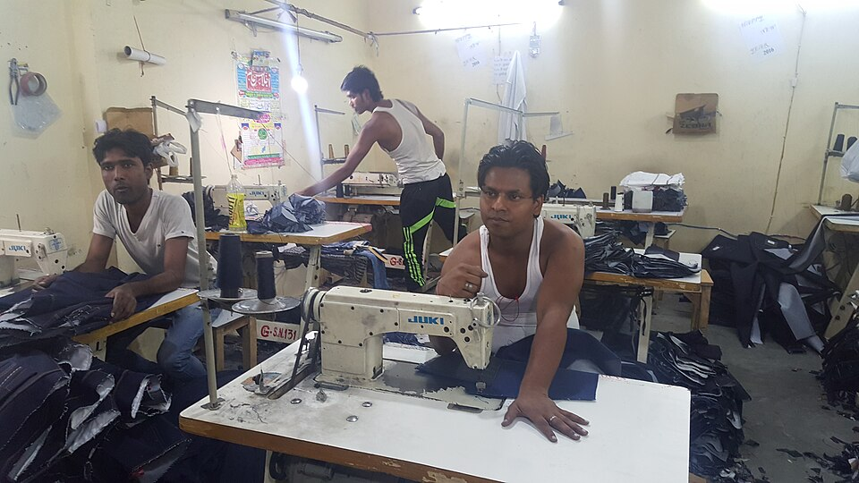
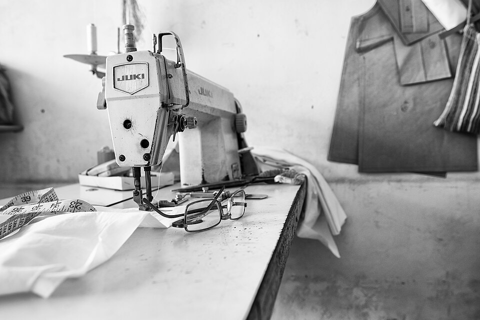

Diagnose an industrial sewing machine that ignores the pedal
Distinguish the treadle linkage, neutral position, pedal sensor and motor feedback before replacing a control box.
Follow the pedal to the sewing head
On a typical industrial lockstitch machine a floor treadle moves a rod to a pedal sensor. The control box reads the request, drives a motor and may use a position sensor to stop the needle in a particular place. A belt or direct drive transfers motion to the head. Independent causes include a sticking pedal linkage, a missing command, a jam and lost motor feedback.

Photo by urbzoo, resized. Original photo · CC BY 2.0.
.jpg){kind=link}

Photo by Sajid213, resized. Original photo · CC BY-SA 3.0.

Watch an industrial sewing machine being set up · Identify the underside of the table and how the base, fittings and machine head come together. Use the exact suffix and controller manual when looking up adjustment or fault codes. DDL-8700 assembly demonstration · JUKI DDL-8700B-7 manual with pedal adjustment and neutral compensation.
Make a 5 V mock pedal and sweep it slowly
On a breadboard place a 10 kΩ linear potentiometer across 0 V and 5 V. Connect the centre wiper through 1 kΩ to a test point. Connect a 100 kΩ resistor from the test point to 0 V. This small load pulls a deliberately disconnected test point low. Measure at the test point with the black lead on 0 V. The circuit represents one possible kind of position output. It specifies no production-machine pinout.
Mark three positions where the trainer reads approximately 1.0, 2.5 and 4.0 V. Treat 2.5 V as the model neutral. Sweep forward and back five times, pausing at the marks. Watch for sudden jumps and confirm the value returns close to 2.5 V. Set a training criterion of ±0.1 V on repeated neutral readings.
Switch off the bench supply, disconnect the lead into the 1 kΩ resistor, then turn on the trainer. The test point stays around 0 V through the sweep even though the pot’s wiper still moves. Change off-power between tests. Compare the wire measurement at each end and check the passive cable with continuity. A single zero reading could also mean a lost supply or ground, so measure the supply across the pot ends.
| Observation | Direction for the next check |
|---|---|
| End-to-end supply good, sensor signal moves, harness end flat | Test the harness path before quoting electronics. |
| Sensor and harness pass; pedal sticks away from neutral | Check the isolated mechanical linkage and spring. Compare the manufacturer’s neutral procedure for this exact box. |
| Command accepted; needle position error repeats | Send the documented error and prior checks to a technician who can prove motor and position feedback on the matching machine. |
Keep a ticket a sewing mechanic can use
Record head, motor and control-box models, exact display code, pedal return, connector seating and whether the complaint appears at first start or after release. On customer equipment work with the sewing mechanic. Keep the mains box closed and the machine disconnected during external checks. A fully guarded test by a trained operator includes neutral at startup, slow speed, return to stop and normal needle position on scrap fabric. Base a warranty on the verified repair and machine combination.